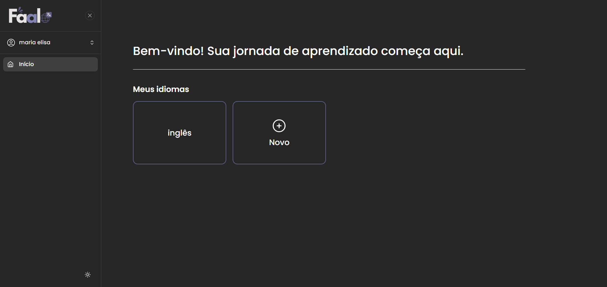

Faalo
Faalo is a web application developed with TypeScript and the MVC Pattern as my final college project. It's a website designed for language learners, providing tools to support them throughout the language acquisition process, such as content and vocabulary management, file and link storage, notes, topic hierarchy organization, and an integrated translator.
Technology Stack
Back-end
Front-end
More About
Available on: www.faalo.site
www.faalo.site

www.faalo.site/home
